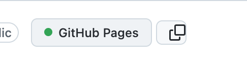

GitHub Pages Detector
A Chrome extension that detects GitHub Pages on repository pages, shows status inline, and lets you open or copy the Pages URL.

A Chrome extension that detects GitHub Pages on repository pages, shows status inline, and lets you open or copy the Pages URL.
